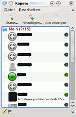
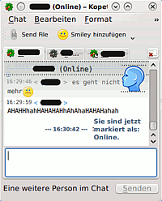
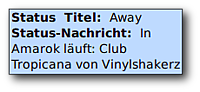

Kopete
Dieser Artikel wurde für die folgenden Ubuntu-Versionen getestet:
Ubuntu 14.04 Trusty Tahr
Zum Verständnis dieses Artikels sind folgende Seiten hilfreich:
Kopete ist ein Instant Messenger für KDE, er kann mit nahezu allen bekannten Instant-Messaging-Protokollen umgehen, dabei können auch mehrere Zugänge von einem Protokoll genutzt werden. Außerdem ist es möglich, verschiedene Profile (also z.B. XMPP (Jabber) und ICQ) des gleichen Kontaktes unter einem Meta-Kontakt zusammenzuführen. Zusätzlich bietet Kopete Webcam-Unterstützung für einige Protokolle, Off-the-Record-Verschlüsselung und ist über Module erweiterbar.
Kopete ist nicht mehr in Kubuntu vorinstalliert und wurde durch KDE-Telepathy ersetzt. Das Programm wird zur Zeit nicht aktiv entwickelt und wurde noch nicht auf die aktuelle KDE-Version portiert.

Unterstützte Protokolle¶
AIM
Bonjour
Gadu-Gadu
ICQ
Lotus Sametime mittels Meanwhile-Plugin

MSN
Novell GroupWise
QQ
Skype (mittels Pidgin-Skype)
Winpopup
XMPP (Jabber) (mit jingle)
Facebook-Chat
Yahoo! Messenger
Installation¶
Installiert [1] wird Kopete über folgendes Paket:
kopete
 mit apturl
mit apturl
Paketliste zum Kopieren:
sudo apt-get install kopete
sudo aptitude install kopete
Da Kopete für KDE entwickelt wurde, ist es sinnvoll die entsprechenden Pakete zu installieren um Kopete in Deutsch zu benutzen.
language-pack-kde-de
language-pack-kde-de-base
mit apturl
Paketliste zum Kopieren:
sudo apt-get install language-pack-kde-de language-pack-kde-de-base
sudo aptitude install language-pack-kde-de language-pack-kde-de-base
Programmstart¶
Nachdem Kopete installiert wurde, lässt es sich direkt aus dem K-Menü unter „Programme -> Internet -> Instant Messenger (Kopete)“ starten.
Zugang einrichten¶
Nach dem Start von Kopete kann man unter „Einstellungen -> Einrichten“ über den Knopf „Zugang hinzufügen“ auf der rechten Seite einen neuen Zugang einrichten. Dort wählt man zuerst das Protokoll, dann kann man die Zugangsdaten und Einstellungen deklarieren.
Status ändern¶
Nachdem ein Zugang erstellt wurde, kann man sich verbinden. Das geht im Kopete-Hauptfenster über die Symbolleiste oder mittels Rechtsklick auf das Symbol rechts unten. In dem nun erscheinenden Popup kann ein Status gewählt werden, über „Status bearbeiten“ können neue Status hinzugefügt, sowie die Standard-Statusnachricht verändert werden.

Einrichtung¶
Stil des Chatfensters ändern¶
Das Erscheinungsbild des Chatfensters kann man unter „Einstellungen -> Einrichten -> Chat-Fenster“ ändern.
Mit dem Knopf „Neu“ kann ein Design von kde-look.org installiert werden, mit „Installieren“ wird ein lokales Design installiert.
Module¶
Konfiguration¶
Kopete verfügt über eine Vielzahl von Modulen, mit denen man das Programm an die individuellen Bedürfnisse und Vorlieben anpassen kann. Diese befinden sich unter „Einstellungen -> Einrichten -> Module“. Hakt man ein Modul an, so wird es aktiviert, durch einen  -Klick auf den Schraubenschlüssel gelangt man zu den Einstellungen des Moduls.
-Klick auf den Schraubenschlüssel gelangt man zu den Einstellungen des Moduls.
Die Konfiguration von GnuPG findet man beispielsweise unter „Einstellungen -> Module -> Kryptografie“.
Bildervorschau in Chats¶
Dieses Modul zeigt eine Bildvorschau im Chatfenster an, wenn ein Gesprächspartner die URL eines Bildes sendet.
Im Hintergrund läuft¶
 Das Modul „Im Hintergrund läuft“ zeigt automatisch den aktuell spielenden Musiktitel als Statusnachricht oder als Anhang der Statusnachricht an.
Texteffekte¶
Mit Hilfe des Moduls „Texteffekte“ werden eigene Nachrichten auf Wunsch in bunter Farbe, mit zufälliger Groß- und Kleinschreibung oder mit Zahlen anstelle von bestimmten Buchstaben angezeigt.
Verlauf¶
In der Grundeinstellung ist der Verlauf aktiviert, das heißt, dass alle Gespräche aufgezeichnet werden. Um beim Beginn eines Gesprächs die zuletzt geschriebenen Nachrichten angezeigt zu bekommen, hakt man in den Einstellungen „Letzte Nachrichten in neuen Chatfenstern anzeigen“ an.
KopeTeX¶
Dieses Modul ist für all jene interessant, bei denen die Kommunikation zum Teil auch aus Formeln besteht. Die Formeln werden mit doppelten Dollarzeichen eingeschlossen in Latex-Syntax eingegeben, zum Beispiel $$\vec \nabla$$.
Um etwaige Tippfehler vor dem Absenden zu erkennen, kann man sich mittels
Strg +
L eine Vorschau anzeigen lassen.
Probleme und Lösungen¶
ICQ¶
Bei einigen Versionen kann es vorkommen, dass Kopete zwar zum ICQ-Netzwerk verbindet, die Kontaktliste aber nicht geladen wird. In diesem Fall sollte man einen Nutzer, der schon zur Buddyliste gehört, noch einmal in die scheinbar leere Liste hinzufügen und Kopete neustarten.
Am 15.11.2010 wurde die standardmäßig hinterlegte Logindomain (login.oscar.aol.com) abgeschaltet. Man muss nun unter Einstellungen/Einrichten/Zugänge den ICQ-Zugang bearbeiten und unter Zugangseinstellung den Haken bei "Standardserverinformationen übergeben" setzen und als Server "login.icq.com" eintragen.
Leerzeilen¶
Zwischen Kopete und Pidgin kommt es immer wieder vor, dass in Pidgin etliche Leerzeilen angezeigt werden, die der Kopetebenutzer nicht eingetippt hat. Abhilfe schafft hier das Ausschalten der Formatierung. Im Chatfenster sollte unter „Einstellungen -> Werkzeugleisten -> Hauptwerkzeugleiste“ die Hauptwerkzeugleiste angezeigt werden. In dieser Werkzeugleiste kann die Formatierung deaktiviert werden.
Yahoo-Videochat¶
Wenn man versucht, sich die Webcam des Chatpartners anzeigen zu lassen, kommt manchmal die Fehlermeldung:
„Das Bildkonvertierungsprogramm Jasper kann nicht gefunden werden. Jasper wird zum Berechnen der Yahoo-Webcam-Bilder benötigt.“Es hilft, das Paket
libjasper-runtime
mit apturl
Paketliste zum Kopieren:
sudo apt-get install libjasper-runtime
sudo aptitude install libjasper-runtime
zu installieren.

- Erstellt mit Inyoka
-
 2004 – 2017 ubuntuusers.de • Einige Rechte vorbehalten
2004 – 2017 ubuntuusers.de • Einige Rechte vorbehalten
Lizenz • Kontakt • Datenschutz • Impressum • Serverstatus -
Serverhousing gespendet von